추천
브라운야드 블랙 니트 + TIME HOMME 차콜 재킷
블랙 니트, 차콜 울 셔츠 재킷, 차콜 투턱 슬랙스로 명도만 달리한 무채색 톤온톤이에요. 한 색 안에서 톤과 소재를 바꾸면 단조롭지 않다는 모노크롬 공식대로 울과 니트의 결 차이로 깊이를 줬어요. 재킷을 벗어도 니트만으로 단정하고, 레더 스니커즈라 긴 근무에도 편해요.
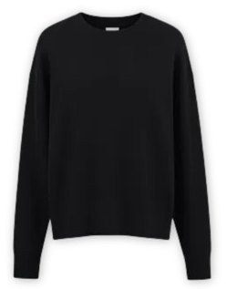
니트브라운야드 블랙 니트크루넥 블랙 니트라 셔츠 없이도 깔끔하고, 낮에 재킷을 벗으면 이것만 남아요.
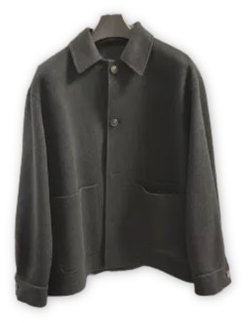
재킷TIME HOMME 차콜 재킷울 셔츠 재킷이라 블레이저보다 편하고, 아침 8°에 딱 맞는 두께예요.

정장바지어나더 오피스 차콜 투턱 정장바지투턱 차콜 슬랙스라 오래 앉아도 편하고, 블랙 니트와 차콜 재킷 사이를 같은 톤으로 이어요.

스니커즈투스페이스 블랙 레더 스니커즈블랙 레더 저먼 트레이너라 오래 걸어도 편하고 슬랙스와도 어울려요.

크로스백생로랑 블랙 나일론 크로스백가벼운 블랙 나일론 메신저백에 출근 짐을 담아요.
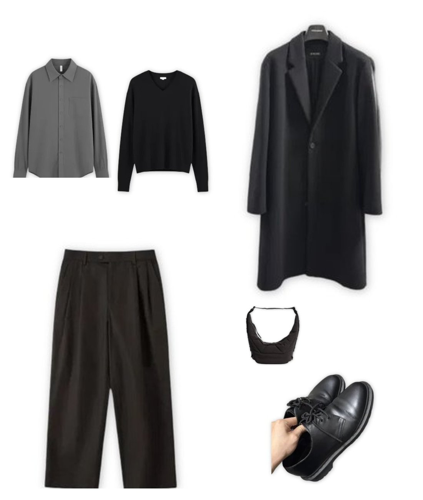
대안
추우면: IN SILENCE 블랙 싱글 코트 + 노이어 그레이 셔츠 + artifact 블랙 브이넥 니트
아침이 더 쌀쌀하게 느껴지면 장식 없는 블랙 롱 코트를 걸치는 버전이에요. 그레이 셔츠 위에 블랙 브이넥 니트를 겹쳐 칼라만 보이게 하면 단정하고, 코트를 벗어도 레이어드가 남아 실내에서도 정돈돼 보여요.

코트IN SILENCE 블랙 싱글 코트군더더기 없는 싱글 롱코트로 출퇴근길 찬 바람을 막아요.

셔츠노이어 그레이 셔츠니트 안에 받쳐 입어 칼라와 소매 끝만 그레이로 보이게 해요.

니트artifact 블랙 브이넥 니트브이넥이라 셔츠 칼라가 자연스럽게 드러나요.
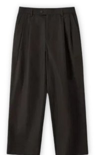
정장바지블랭크룸 블랙 투턱 정장바지블랙 투턱 슬랙스라 코트 아래 실루엣이 깔끔하고 격식도 맞아요.
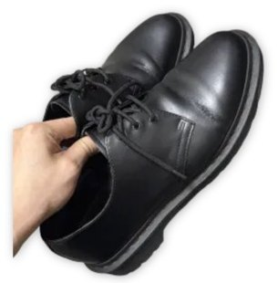
구두DR. MARTENS 블랙 레더 구두블랙 레더 더비로 코트의 격식에 맞추고, 비에도 강해요.

숄더백르메르 블랙 호보 숄더백블랙 호보백으로 전체를 블랙 톤으로 이어요.
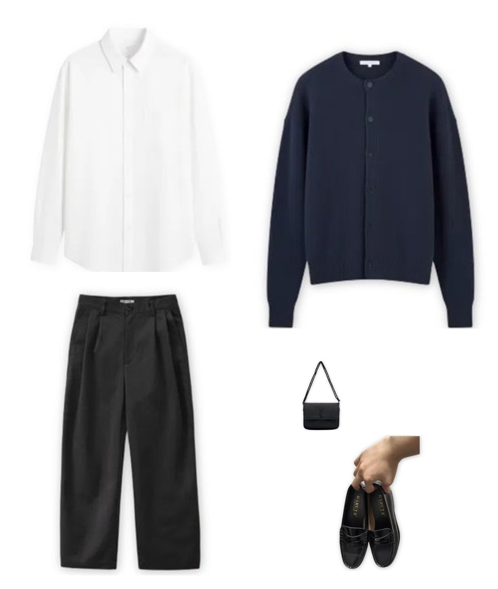
대안
포인트 하나: Millo Archive 네이비 니트 가디건 + POTTERY 화이트 셔츠
네이비 하나만 포인트로 넣은 버전이에요. 화이트 셔츠에 네이비 가디건, 차콜 투턱 슬랙스와 블랙 로퍼로 나머지는 무채색으로 눌러 차분한 출근룩이 돼요. 낮엔 가디건만으로 충분하고, 벗어도 셔츠 차림이라 깔끔해요.
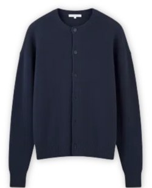
가디건Millo Archive 네이비 니트 가디건코디의 유일한 색이에요. 니트 가디건이라 일교차에 입고 벗기 쉬워요.
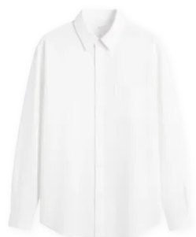
셔츠POTTERY 화이트 셔츠기본 화이트 셔츠로 네이비와 차콜 사이를 밝혀 줘요.

정장바지블랭크룸 차콜 투턱 정장바지차콜 투턱 와이드 슬랙스로 셔츠 차림의 격식을 받쳐 줘요.
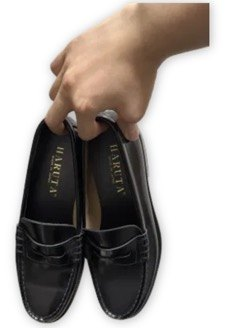
로퍼HARUTA 블랙 페니 로퍼블랙 페니 로퍼로 깔끔하게 마무리해요.
크로스백생로랑 블랙 나일론 크로스백블랙 메신저백으로 색을 더하지 않아요.
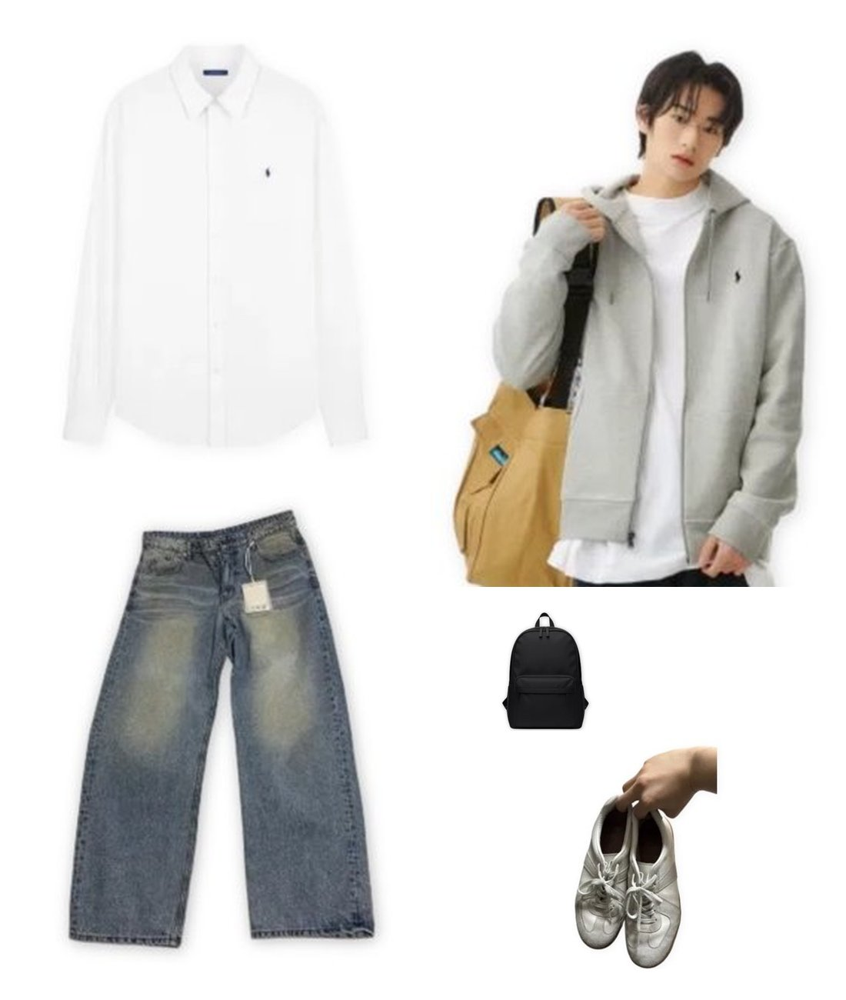
옷장 자동 조합
파브레가 화이트 스트라이프 셔츠 + TONYWACK 블랙 스웨이드 재킷
같은 날씨와 격식 기준(무채색 위주, 포인트 컬러는 하나까지)으로 옷장에서 자동으로 고른 조합이에요.
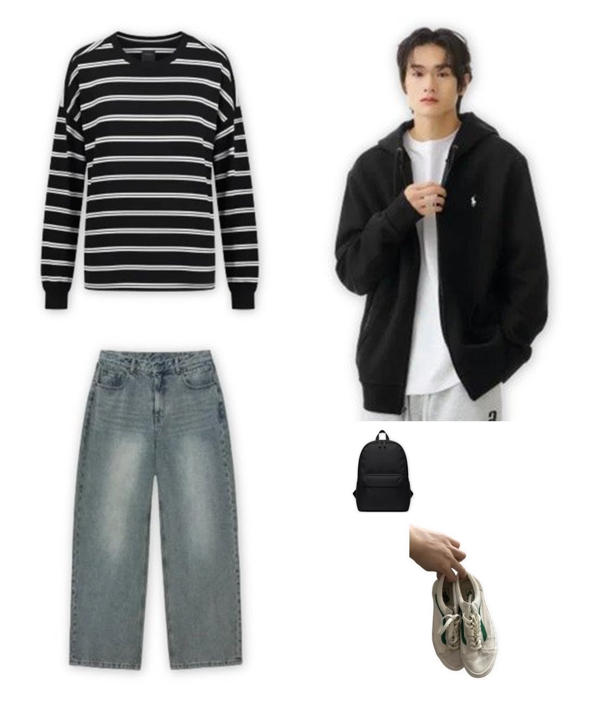
옷장 자동 조합
ZAVANAS 화이트 긴팔 티 + Tony Hawk 블랙 퀼팅 재킷
같은 날씨와 격식 기준(무채색 위주, 포인트 컬러는 하나까지)으로 옷장에서 자동으로 고른 조합이에요.
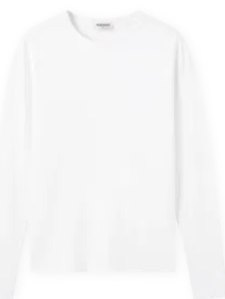
긴팔 티ZAVANAS 화이트 긴팔 티
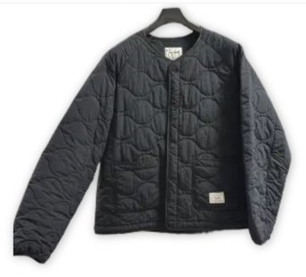
재킷Tony Hawk 블랙 퀼팅 재킷

긴바지쿠어 아이보리 와이드 긴바지

슬립온로맨틱무브 브라운 스웨이드 슬립온
숄더백르메르 블랙 호보 숄더백
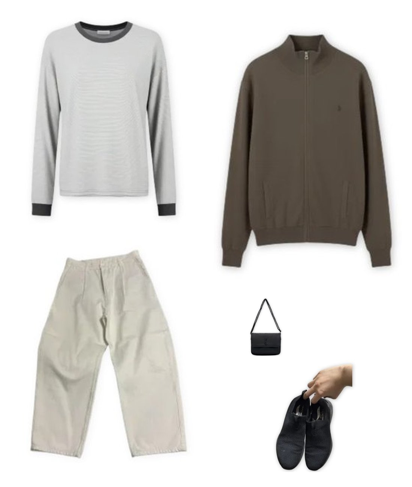
옷장 자동 조합
POTTERY 차콜 폴로 니트 + ART IF ACTS 블랙 노르딕 가디건
같은 날씨와 격식 기준(무채색 위주, 포인트 컬러는 하나까지)으로 옷장에서 자동으로 고른 조합이에요.